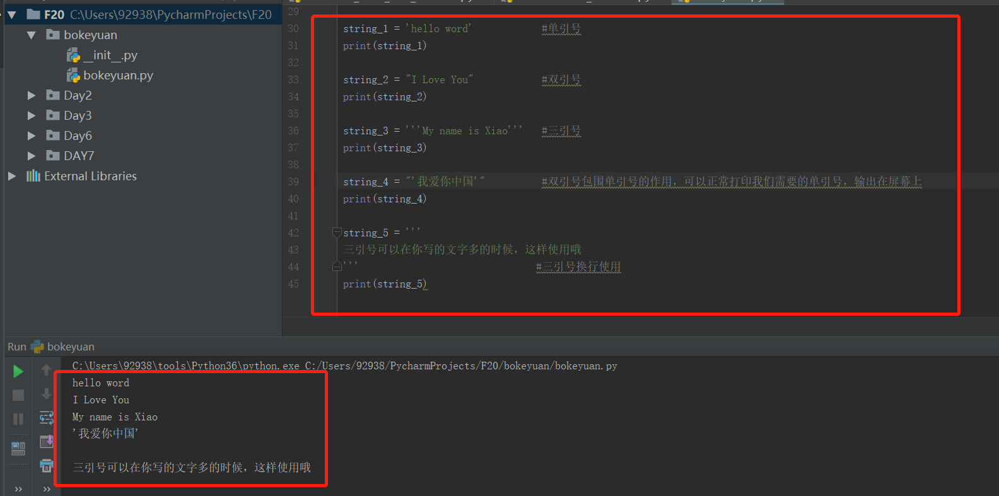
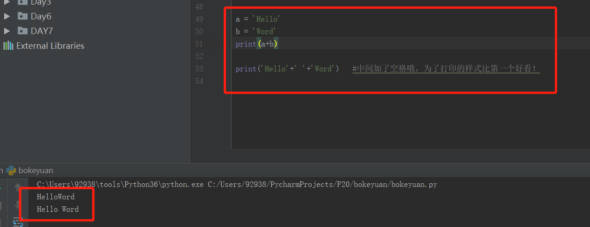
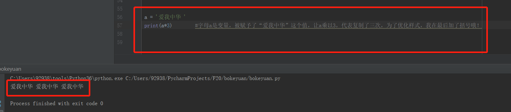
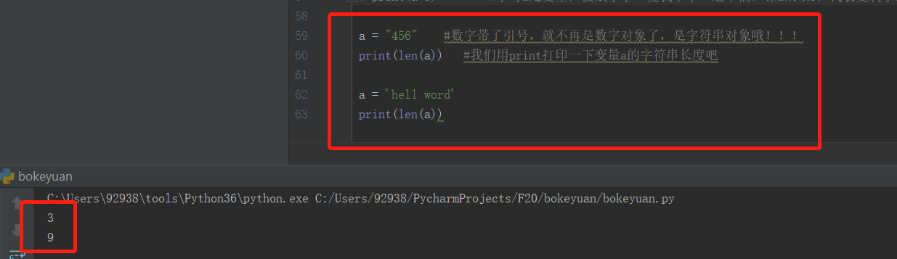
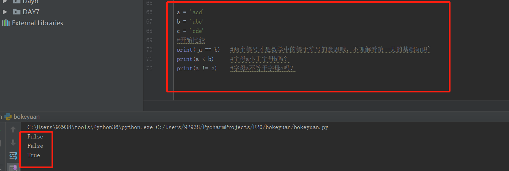
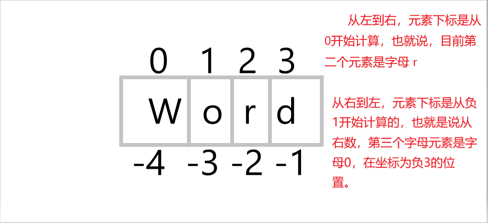
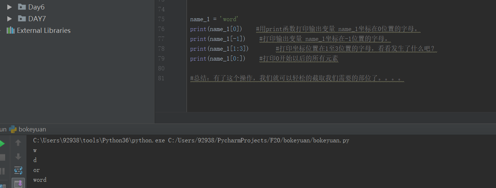

年薪20万的梦想，又进了一步。。。
戏好多
’字符串‘开始啦~
字符串的定义：字符串可以用英文单引号或双引号又或者三引号包围起来。
为毛有单引号，还要有双引号和三引号???
看案例吧：

字符串的其他使用方法：
先看看字符串的拼接吧，不理解的小伙伴，自己操作下试试：（可以复制代码哦） #井号后面是不会被程序执行的，是代表注释说明前面代码的意思。
#字符串的拼接
a = 'Hello'
b = 'Word'
print(a+b)
print('Hello'+' '+'Word') #中间加了空格哦，为了打印的样式比第一个好看！

如果拼接算是字符串的加法，那么我们看看乘法：

接下来，认识一个函数吧！
len() 函数，这个函数是可以获取字符串长度信息的。
比如：
a = "456" #数字带了引号，就不再是数字对象了，是字符串对象哦！！！
print(len(a)) #我们用print打印一下变量a的字符串长度吧
a = 'hell word'
print(len(a))
考验大家一个小知识哦，如果没有第一个print(len(a)) 那么屏幕输出打印的是 3还是 9呢？如果不明白请看第二天的基础知识哦~

接下来，我们做下比较：（真返回True 假返回False）

再接下来看看字符串跟多的常见操作吧~
字符串的序列（Squence操作）我们先看下简单的介绍字符串的下标坐标位置怎么看！

看懂了吗？我们来操作下~
name_1 = 'word'
print(name_1[0]) #用print函数打印输出变量 name_1坐标在0位置的字母。
print(name_1[-1]) #打印输出变量 name_1坐标在-1位置的字母。
print(name_1[1:3]) #打印坐标位置在1至3位置的字母，看看发生了什么吧？
print(name_1[0:]) #打印0开始以后的所有元素
#总结：有了这个操作，我们就可以轻松的截取我们需要的部位了。。。。

今天就到这里啦，明天有字符串的重要操作哦！！！